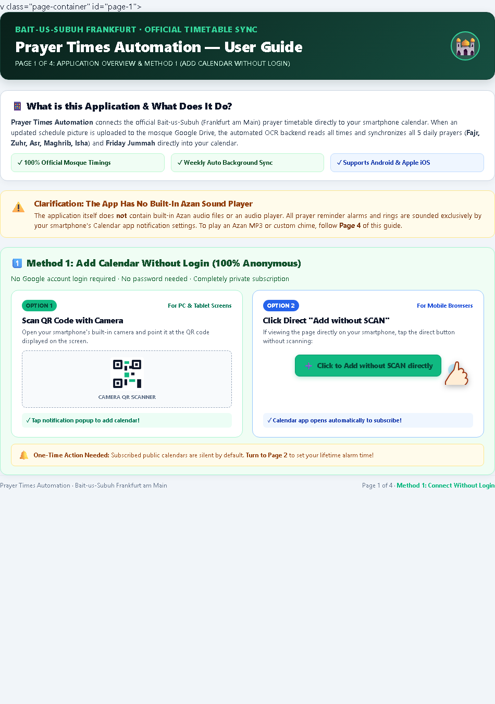

Page 1 of 4
App Overview & Method 1 (Add Without Login)


What is this Application & How Method 1 Works
The system synchronizes the official Bait-us-Subuh (Frankfurt) prayer schedule directly into your smartphone calendar. In Method 1, you subscribe anonymously with no Google login and no password required.
📸 Option 1: Scan QR Code
Point your smartphone camera at the QR code displayed on the screen. Tap the notification banner to add the Bait-us-Subuh calendar with a single tap.
👆 Option 2: Direct Button
If browsing directly on your mobile device, simply click "Click to Add without SCAN directly". Your phone's calendar app will open immediately to confirm subscription.
💡 Why Follow Page 2 Next?
Public calendar feeds are silent by default due to smartphone security rules. Proceed to Page 2 to set your desired lifetime alarm time (e.g. 15 minutes before) once!